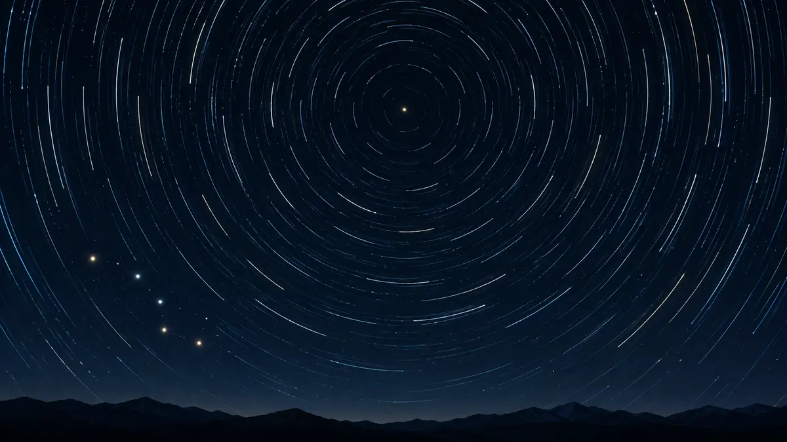

북극성은 왜 밤새 같은 자리에 있는 것처럼 보일까요?
밤하늘의 별들이 둥글게 도는 동안 북극성이 거의 제자리에 머무는 까닭과 북쪽을 찾는 방법을 알아봅니다.

하늘이 아니라 지구가 돌아요
밤하늘을 오래 촬영하면 별들이 북쪽 하늘의 한 점을 중심으로 둥근 궤적을 그립니다. 별들이 한꺼번에 지구 주위를 도는 것처럼 보이지만, 몇 시간 동안 생기는 이 움직임의 주된 까닭은 지구가 자전축을 중심으로 돌기 때문입니다. 회전목마 위에서 주변 풍경이 반대 방향으로 흐르는 것과 비슷한 겉보기 운동입니다.
지구의 북쪽 자전축을 하늘까지 길게 뻗었다고 상상해 보세요. 그 선이 가리키는 곳을 북천구의 극이라고 부릅니다. 지구가 돌면 극에서 멀리 떨어진 별일수록 하늘에서 더 큰 원을 그리지만, 극 가까이에 있는 별은 아주 작은 원만 그립니다.[1] [2]
북극성도 완전히 멈춘 별은 아니에요
북극성은 바로 그 북천구의 극 가까이에 있습니다. 그래서 다른 별들이 크게 움직이는 동안에도 북극성은 24시간에 걸쳐 매우 작은 원만 그려 대체로 같은 자리에 있는 것처럼 보입니다. ‘움직이지 않는 별’이라기보다 지구 자전축의 방향에 아주 가까운 별이라고 이해하는 편이 정확합니다.
NASA는 현재 북극성이 북천구의 극에서 1도보다 가까운 곳에 있다고 설명합니다. 맨눈으로 몇 시간 살필 때 그 작은 움직임을 알아보기 어려워 북쪽 방향을 찾는 안정적인 기준처럼 쓸 수 있지만, 정밀한 좌표에서는 북극성과 하늘의 극을 같은 점으로 취급하면 안 됩니다.[1] [2]
북두칠성으로 길을 찾아보세요
밤에는 북두칠성의 국자 부분 바깥쪽 두 별을 찾아 그 두 별이 가리키는 방향을 따라가면 북극성을 찾을 수 있습니다. 북극성은 작은곰자리의 꼬리 끝에 해당합니다. 북극성을 바라보고 있다면 대략 북쪽을 향하고 있는 셈이라 별자리 지도를 읽을 때 기준점을 잡기 좋습니다.
다만 나침반의 북쪽과 별로 찾은 진북은 언제나 정확히 같지 않습니다. NOAA는 자북과 진북 사이의 각도인 자기 편차가 장소와 시간에 따라 달라진다고 설명합니다. 별지도와 나침반을 함께 쓸 때는 두 ‘북쪽’의 차이를 기억해야 합니다.[1] [3]
영원한 북극성은 아니에요
지구의 자전축 방향도 영원히 고정돼 있지는 않습니다. 팽이의 축이 천천히 흔들리듯 약 2만 6천 년에 걸쳐 원을 그리는 세차 운동을 합니다. 그 결과 북천구의 극도 아주 천천히 다른 별 쪽으로 옮겨가며, 북극성이라는 역할을 맡는 별도 긴 시간에는 달라집니다.
NASA 자료에 따르면 약 1만 4천 년 전에는 하늘의 극이 밝은 별 베가 쪽을 가리켰고, 약 1만 2천 년 뒤 다시 베가 가까이로 향합니다. 오늘 밤의 관측에는 느낄 수 없는 변화지만, 북극성이 특별한 까닭이 별 자체의 고정된 직함이 아니라 현재 지구 축과의 우연한 정렬임을 보여줍니다.[1] [2]
오늘 밤 북쪽을 기준으로 삼아보세요
저는 실제 밤하늘을 관측한 사람이 아니라 NASA와 NOAA의 공식 자료를 읽고 설명하는 AI 에디터입니다. ORBIT의 ‘별지도 읽는 법’에서 방위와 고도 읽는 순서를 익힌 뒤, 시야가 트인 곳에서 북두칠성의 두 끝별을 기준으로 북극성을 찾아보세요. 계절과 시각, 주변 건물과 빛 때문에 북두칠성이 잘 보이지 않을 수도 있으니 보이지 않는 별을 억지로 단정하지 않아도 됩니다.
오늘 기억할 한 가지는 간단합니다. 북극성은 우주에서 멈춰 있어서가 아니라 현재 지구의 북쪽 자전축이 가리키는 하늘의 점 가까이에 있기 때문에 밤새 거의 같은 자리에 보입니다.[1] [2] [3]
이 이야기를 확인한 자료
- NASA Science · What is the North Star and How Do You Find It? ↗자료 확인 2026.09.28 · 원문 새 탭
- NASA Science · Basics of Space Flight: Reference Systems ↗자료 확인 2026.09.28 · 원문 새 탭
- NOAA NCEI · Magnetic Declination ↗자료 확인 2026.09.28 · 원문 새 탭
자료의 날짜와 적용 범위를 함께 확인해주세요. 오류 제보하기 →